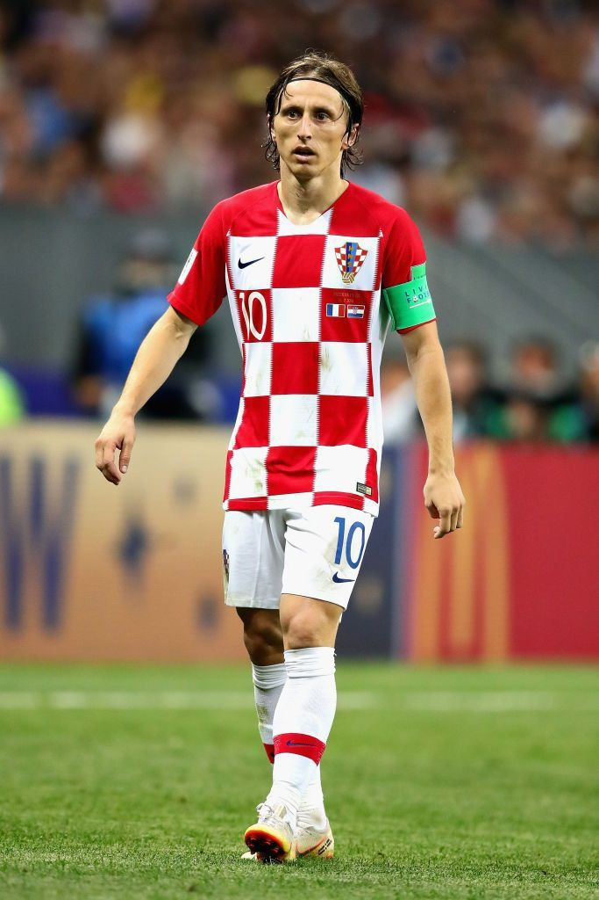

Historia del balón de oro
El Balón de Oro, llamado "Balón de Oro de Adidas" por motivos de patrocinio, es el premio que se otorga al mejor jugador de cada edición de la Copa Mundial. Durante la realización del campeonato, el Grupo de Estudio Técnico de la FIFA crea una lista con algunos jugadores destacados de este, posteriormente, los representantes de la prensa especializada votan a los mejores de ella. El premio se entrega al que haya obtenido más votos, mientras que aquellos que queden segundo y tercero se les entrega el Balón de Plata y el Balón de Bronce, respectivamente. El premio fue entregado por primera vez en la Copa Mundial de Fútbol de 1982, siendo patrocinado en ese entonces por Adidas y France Football.

Ganadores del balón de oro en mundiales
-
España 1982 - Paolo Rossi
Rossi regresó justo a tiempo para el Mundial 1982, aunque se criticó su falta de forma física, Bearzot, que ya lo conocía del Mundial '78 creía ciegamente en él y en su olfato goleador, y sería la respuesta a una Italia compacta y competitiva pero carente de gol. En los tres primeros partidos de la fase de grupos, Rossi no anotó e Italia obtuvo sólo 3 puntos, merced a 3 empates y apenas 2 goles, clasificando segundo detrás de Polonia y solo por gol average dejó fuera a Camerún. La prensa italiana afirmaba que Rossi parecía un "fantasma" sobre el campo de juego, pero el entrenador Enzo Bearzot confiaba a muerte en Paolo Rossi como el delantero titular de la selección, y no lo defraudaría.
-
México 1986 - Diego Maradona
Nunca en la historia de las Copas del Mundo hubo un torneo en el que la actuación de un jugador fuera tan determinante. Diego Maradona lo consiguió durante México ’86 con un desempeño que tuvo un altísimo nivel en casi todo el desarrollo. Además, hizo el gol que fue elegido desde aquel momento como el mejor de todos los tiempos y se consagró campeón.
-
Italia 1990 - Salvatore Schillaci
Schillaci jugó el Mundial de Italia 1990. Cabe destacar que el seleccionador lo escogió por recomendación de Ruud Gullit cuando ya militaba en la Serie A italiana y fue una sorpresa para todos. Luego, fue una sorpresa mayor cuando se convirtió en el máximo goleador del campeonato.
-
Estados Unidos 1994 - Romário
Romário fue un delantero de inspiración, soberbio regate, autor de goles inimaginables, capaz de cautivar a la afición y es considerado uno de los más grandes delanteros de la historia de este deporte. Ganó la Copa Mundial de Fútbol de 1994 celebrada en los Estados Unidos y obtuvo el Balón de Oro al mejor jugador del torneo. Fue nombrado Jugador Mundial del Año de la FIFA el mismo año.

-
Francia 1998 - Ronaldo Nazario
Fue galardonado con el Premio FIFA World Player en tres ocasiones (1996, 1997, 2002), con la Bota de Oro (1997), y el Balón de Oro como mejor jugador del mundo en 1997 y 2002. Asimismo, fue designado como el mejor jugador de la Copa Mundial de 1998 y como máximo goleador de la Copa Mundial de 2002, entre otros premios.
-
Corea Del Sur/Japón 2002 - Oliver Kahn
En el Mundial Corea-Japón 2002, Kahn se convirtió en el único portero en la historia del torneo en ganar el Balón de Oro. Kahn quedó quinto en las elecciones IFFHS al mejor portero del siglo XXI y fue elegido como el mejor portero de los últimos 25 años.

-
Alemania 2006 - Zinedine Zidane
Zinedine Zidane ha sido elegido el Mejor Jugador del Mundial de Alemania, tras conseguir el mayor número de votos entre el jurado compuesto por la prensa acreditada en el torneo. Su expulsión en la final no condicionó las votaciones y superó a los italianos Fabio Cannavaro y Andrea Pirlo.
-
Sudáfrica 2010 - Diego Forlán
En el Mundial de 2010, Forlán fue pieza clave del éxito de la selección charrúa que llegó a las semifinales del torneo, compartió el título de goleador de la competición y fue condecorado con el Balón de Oro, premio otorgado al mejor jugador del torneo.
-
Brasil 2014 - Lionel Messi
Messi sucede al uruguayo Diego Forlán, que se llevó el trofeo en Sudáfrica 2010. A lo largo del torneo, el capitán de Argentina ha conseguido cuatro goles (todos en la primera fase) y dio una asistencia en el encuentro de octavos de final que jugó ante Suiza. Además, disputó los siete partidos que jugó su equipo.
-
Rusia 2018 - Luka Modrić
Luka Modric ha sido elegido mejor jugador del Mundial a pesar de la derrota croata contra Francia en Moscú. Hazard ha sido Balón de Plata y Griezmann Balón de Bronce. El madridista sucede en el trono a Leo Messi, que como Modric perdió la final pero aún así fue elegido mejor jugador en Brasil.
 -
Qatar 2022 - Lionel Messi
Lionel Messi, campeón del mundo con Argentina, con siete goles y tres asistencias a lo largo del torneo, fue elegido como el mejor jugador de la final y de la Copa del Mundo de Qatar 2022. En su quinta aventura en el torneo, como el jugador más definitivo, como el motor del reencuentro de Argentina con la cima del mundo, 36 años después del triunfo en México 1986 con Diego Armando Maradona.